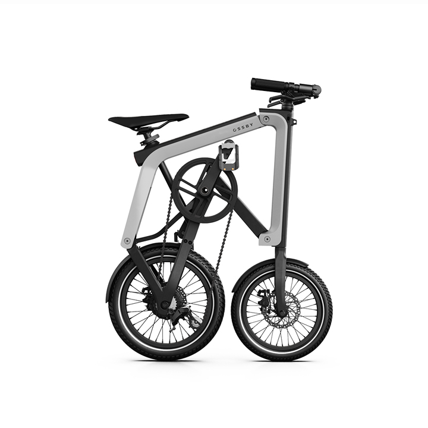

REFERENCE AOssby GEO浅灰连续框面、平直外边、大内圆角；黑色内框、活动件与触点后退，形成轻薄的框架层次。官网材质：植物基树脂与再生材料复合框架。并非因呈银灰色就认定为裸铝。3840×2160 · 前节点原图3840×2160 · 后节点原图iF来源ANIMA设计方
REFERENCE BBraun Powerdrill 概念图白色圆角方体、黑色连续细边、平缓面起伏；黑色功能区与白色壳体明确分开，视觉柔和但边界清楚。已找到与附件同款的完整大图。作者、首发出处及正式量产身份尚未核实；不归为已确认的 Braun 历史量产产品。3840×3840 · 完整同源大图图片出处